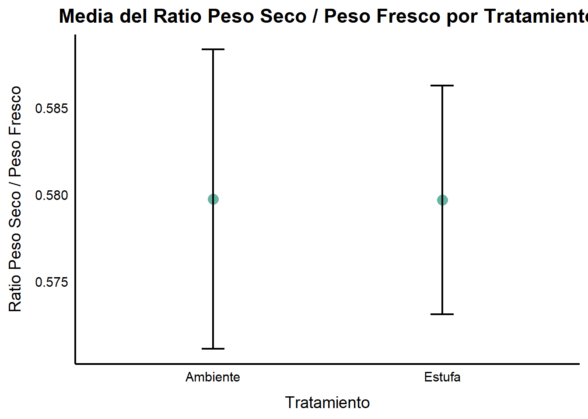
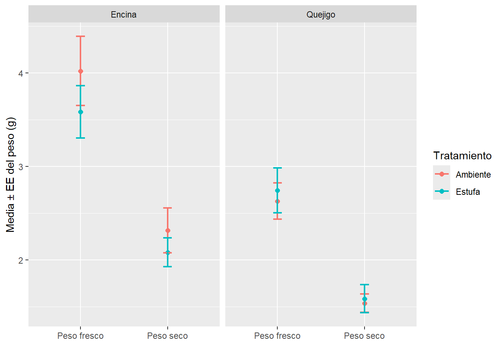

Impacto de la Respiración en la Pérdida de Peso de Bellotas
Author
Mompeán, E.
Published
Oct 28, 2024
Introducción y objetivos
Los ensayos de desecación son métodos experimentales de uso común para la determinación de las tasas de desecación de las bellotas. Estos ensayos son simples, ya que consisten únicamente en dejar las bellotas en condiciones ambientales estandarizadas (generalmente condiciones de laboratorio) y pesarlas a intervalos regulares de tiempo para determinar esta pérdida de peso como pérdida de agua. Sin embargo, Pedro llamó la atención sobre que estos ensayos no tienen en cuenta la pérdida de peso de la semilla por respiración. Los embriones en las bellotas están vivos y por lo tanto respiran, lo que conlleva una pérdida de peso en forma de \(CO_2\). Aunque tenemos la intuición de que esta pérdida de peso por respiración es pequeña, la realidad es que no existen, hasta donde nosotros sabemos, artículos científicos que tengan en cuenta la pérdida de peso por respiración.
El objetivo de este ensayo es determinar si la pérdida de peso de las bellotas durante un ensayo de desecación estándar se debe casi exclusivamente a la pérdida de agua o si existe una parte de esa pérdida de peso que se debe a la respiración y no es despreciable.
Metodología
Desde el 19 de Septiembre hasta el 7 de Octubre se tomaron medidas diarias del peso de dos conjuntos de 10 bellotas de dos especies diferentes, Quercus ilex y Quercus faginea. Estas son las bellotas desecadas a temperatura ambiente de laboratorio, su pérdida de peso es resultado de la suma de la pérdida de agua y la respiración de la bellota. Al mismo tiempo, entre el 19 y el 21 de septiembre se tomaron dos conjuntos de 10 bellotas de las dos especies mencionadas y de los mismos lotes elegidos para el ensayo ya descrito. Estos dos conjuntos de bellotas se sometieron a 70ºC durante 48 horas. Las altas temperaturas aplicadas pretenden desecar el embrión rápidamente, matándolo y evitando que la pérdida de peso de la bellota pueda deberse a la respiración. Toda la pérdida de peso se debe en este ensayo a la pérdida de agua.
Según esta metodología, podemos extraer las siguientes predicciones en caso de que nuestra hipótesis sea correcta, es decir que la respiración sea un factor determinante en la pérdida de peso de la bellota:
El ratio peso seco/peso fresco de las bellotas sometidas a un ensayo de desecación a temperatura ambiente será significativamente más bajo que las bellotas sometidas a la desecación a alta temperatura en la estufa.
Partiendo de dos grupos de bellotas con tamaños similares, la aplicación de tratamientos de desecación diferentes (ambiente y estufa) dará lugar a grupos de bellotas con pesos secos diferentes, siendo los pesos secos de las bellotas sometidas a desecación a temperatura ambientes significativamente más bajos.
Resumen de resultados
Ninguna de las predicciones se cumplieron. Respecto a la primera predicción, el análisis del ratio de peso seco/peso fresco entre dos tratamientos muestra que no hay diferencias significativas (\(p = 0.996\)), lo cual sugiere que la respiración no afecta la pérdida de peso en las bellotas. Tampoco se observaron diferencias significativas por especie (\(p = 0.695\)) ni interacción entre tratamiento y especie (\(p = 0.288\)). Respecto a la segunda predicción, se consideró también si había diferencias en el peso seco de bellotas secadas en distintos ambientes (Ambiente y Estufa). La falta de diferencia en el peso seco, tras partir de pesos frescos similares, refuerza la ausencia de efecto respiratorio sobre la pérdida de peso.
Resultados
El cálculo de la media y el error estándar del ratio peso seco/peso fresco en los dos tratamientos indica que no existen diferencias entre los tratamientos (Figure 1, \(p = 0.996\)). Esto implica que no existe un efecto significativo de la respiración en la pérdida de peso de la bellota. Tampoco se encuentran diferencias en función de la especie (\(p = 0.695\)) ni efectos significativos de la interacción entre el tratamiento y la especie (\(0.288\)). La predicción 1 no se cumple.
Un enfoque alternativo es estudiar si existen diferencias significativas entre las bellotas secadas en ambientes diferentes (Ambiente y Estufa) en términos de su peso seco. Si las bellotas que han sufrido tratamientos diferentes acaban en pesos secos diferentes, aún partiendo de grupos de bellotas con pesos frescos similares, esto significaría que existe un efecto significativo de la respiración sobre la pérdida de peso. La Figure 2 muestra como no existen diferencias en el peso fresco al inicio del ensayo para ninguna de las dos especies y tampoco existen diferencias con distintos tratamientos. Al realizar un kruskal.test() sobre los datos, los únicos grupos de datos que presentan diferencias significativas (\(p \leq 0.05\)) son los datos de peso fresco frente a peso seco, diferencias que son obvias. La predicción 2 no se cumple.
Código
# ANOVA de peso seco/peso fresco segun tratamiento y especie# Definir variablesdata <- combined_df1response <- data$`Ratio peso seco / peso fresco`factor1 <- data$Tratamientofactor2 <- data$Especie# Crear un modelo ANOVA con la interacción de dos variables categóricasmodelo <-aov(response ~ factor1 * factor2, data = data)### 1. Test de Normalidad de los residuos# Extraer los residuos del modeloresiduos <-residuals(modelo)# Prueba de Shapiro-Wilk para testar normalidadshapiro_test <-shapiro.test(residuos)print(shapiro_test) # Distribución normal
Shapiro-Wilk normality test
data: residuos
W = 0.9706, p-value = 0.376
Código
### 2. Test de Homogeneidad de Varianzas# Prueba de Levene para testar homogeneidad de varianzalevene_test <-leveneTest(response ~ factor1 * factor2, data = data)print(levene_test) # Homogeneidad de varianzas
Levene's Test for Homogeneity of Variance (center = median)
Df F value Pr(>F)
group 3 1.9875 0.1332
36
Código
summary(aov(`Ratio peso seco / peso fresco`~ Tratamiento*Especie, data = combined_df1))
Df Sum Sq Mean Sq F value Pr(>F)
Tratamiento 1 0.00000 0.0000000 0.000 0.996
Especie 1 0.00019 0.0001873 0.156 0.695
Tratamiento:Especie 1 0.00140 0.0013953 1.164 0.288
Residuals 36 0.04317 0.0011992
Código
# ANOVA de peso fresco y peso seco segun tratamiento y especie# Definir variablescombined_df2 <-data.frame(Peso =c(combined_df1$`Peso fresco`, combined_df1$`Peso seco`),`Tipo de peso`=c(rep("Peso fresco", 40), rep("Peso seco", 40)))combined_df2 <-cbind(rbind(combined_df1[,c(1:5,11)], combined_df1[,c(1:5,11)]), combined_df2)data <- combined_df2response <- combined_df2$Pesofactor1 <- data$Tratamientofactor2 <- data$Especiefactor3 <- data$Tipo.de.peso# Crear un modelo ANOVA con la interacción de dos variables categóricasmodelo <-aov(response ~ factor1 * factor2 * factor3, data = data)### 1. Test de Normalidad de los residuos# Extraer los residuos del modeloresiduos <-residuals(modelo)# Prueba de Shapiro-Wilk para testar normalidadshapiro_test <-shapiro.test(residuos)print(shapiro_test) # Distribución NO-normal
Shapiro-Wilk normality test
data: residuos
W = 0.96563, p-value = 0.03
Código
### 2. Test de Homogeneidad de Varianzas# Prueba de Levene para testar homogeneidad de varianzalevene_test <-leveneTest(response ~ factor1 * factor2 * factor3, data = data)print(levene_test) # Homogeneidad de varianzas
Levene's Test for Homogeneity of Variance (center = median)
Df F value Pr(>F)
group 7 1.8837 0.08475 .
72
---
Signif. codes: 0 '***' 0.001 '**' 0.01 '*' 0.05 '.' 0.1 ' ' 1
Código
# Aplicar Kruskal test# Crear una nueva variable combinadadata$combined_factor <-interaction(combined_df2$Tratamiento, combined_df2$Especie, combined_df2$Tipo.de.peso)# Aplicar el test de Kruskal-Wallis a la nueva variablekruskal_test_combined <-kruskal.test(response ~ combined_factor, data = data)print(kruskal_test_combined)
Kruskal-Wallis rank sum test
data: response by combined_factor
Kruskal-Wallis chi-squared = 53.907, df = 7, p-value = 2.454e-09
Código
posthoc <-dunnTest(response ~ combined_factor, data = data, method ="bh")posthoc$res[posthoc$res$P.adj <=0.05,]
# Crear el gráfico de puntos con barras de errorggplot(summary_df, aes(x = Tratamiento, y = mean_ratio)) +geom_point(size =4, color ="#69b3a2") +# Media representada como un puntogeom_errorbar(aes(ymin = mean_ratio - se_ratio, ymax = mean_ratio + se_ratio), width =0.1, color ="black", size =0.8) +# Barras de errorlabs(title ="Media del Ratio Peso Seco / Peso Fresco por Tratamiento",x ="Tratamiento",y ="Ratio Peso Seco / Peso Fresco") +theme_minimal(base_size =14) +# Fuente base ajustada para mayor legibilidadtheme(panel.grid.major =element_blank(), # Eliminar líneas de cuadrícula grandespanel.grid.minor =element_blank(), # Eliminar líneas de cuadrícula pequeñasaxis.line =element_line(size =0.8, color ="black"), # Línea de eje más claraaxis.title.x =element_text(margin =margin(t =10)), # Espacio entre el título y el eje xaxis.title.y =element_text(margin =margin(r =10)), # Espacio entre el título y el eje yplot.title =element_text(hjust =0.5, face ="bold"), # Centrar el título y hacerlo en negritaaxis.text =element_text(color ="black") # Colores de texto del eje más oscuros )

Figure 1: Media y error estándar del ratio peso seco/peso fresco para el ensayo de desecación en laboratorio (ambiente) y a 70ºC (estufa).
Código
### Gráfico t0 a tf del peso ##combined_df2 <-data.frame(Peso =c(combined_df1$`Peso fresco`, combined_df1$`Peso seco`),`Tipo de peso`=c(rep("Peso fresco", 40), rep("Peso seco", 40)))combined_df2 <-cbind(rbind(combined_df1[,c(1:5,11)], combined_df1[,c(1:5,11)]), combined_df2)summary_df4 <- combined_df2 %>%group_by(Tratamiento, Especie, Tipo.de.peso) %>%summarise(mean_ratio =mean(Peso),se_ratio =sd(Peso) /sqrt(n()) )# Crear el gráfico de puntos con barras de errorggplot(summary_df4, aes(x = Tipo.de.peso, y = mean_ratio, colour = Tratamiento), alpha =0.25) +geom_point(size =2) +# Media representada como un puntogeom_errorbar(aes(ymin = mean_ratio - se_ratio, ymax = mean_ratio + se_ratio), width =0.1, size =0.8) +# Barras de errorfacet_wrap(~ Especie) +ylab("Media ± EE del peso (g)") +xlab("")

Figure 2: Media y error estándar del peso para el ensayo de desecación en laboratorio (ambiente) y a 70ºC durante 48 horas (estufa), graficado por especie